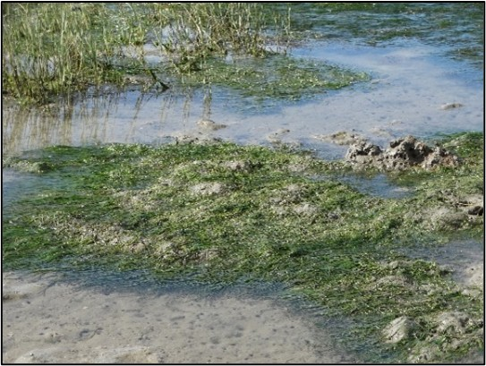
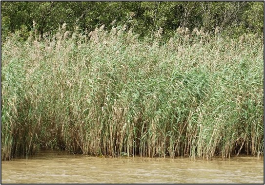
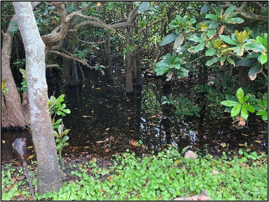

![]()
Six different macrophyte habitats are recognised in South African estuaries. The spatial distribution of different macrophyte communities along the length of an estuary is dependent on the salinity created by a continual flow of freshwater into the system. This spatial distribution is of significance as it gives a good indication of the health of the estuary. Estuaries with low freshwater inflow tend to have low macrophyte diversity.

Important estuarine habitats
Macrophytes fulfil an important ecological function as growth and decomposition influence other biotic and abiotic components. Macrophytes provide physical structure to the littoral zone and serve as a habitat for fauna. Macrophytes also play an important role in terms of nutrient trapping, recycling and as a food source. Data on the area coverage and species composition of macrophyte habitats are used to determine estuary condition for South African estuaries. It is also used to inform estuary management and conservation priorities. The presence or absence of rare and keystone species can be used as indicators of change. It is therefore important to have these data available and regularly updated.
Submerged macrophytes

Plants that are rooted in both soft subtidal and low intertidal substrata and whose leaves and stems are completely submerged for most states of the tide. Submerged macrophytes tend to occur in permanently open estuaries, particularly eelgrass (Zostera capensis) whereas Ruppia cirrhosa prefers the less saline and sheltered conditions of estuarine lakes and temporarily open/closed estuaries. Stuckenia pectinata (ribbon weed, fennel pondweed) prefers fresher conditions (salinity below 10) and therefore occurs in closed systems or in the upper reaches of estuaries.
Submerged macrophytes are important primary producers in estuaries providing a source of food, refugia and nursery for invertebrate and fish species. They play an important role in biogeochemical processes including oxygenating the water column during the growing season through photosynthesis, improving water clarity, nutrient trapping and recycling. The distribution and abundance of submerged macrophytes is threatened by a decline in water quality and smothering from macroalgal blooms and invasive aquatic plants.
Reeds and sedges

Reeds, sedges and rushes are important in the freshwater and brackish zones of estuaries. Because they are often associated with freshwater input they can be used to identify freshwater seepage sites along estuaries. The dominant species are the common reed Phragmites australis and sedges Schoenoplectus spp., Scirpoides spp. and Bolboschoenus maritimus.
Like salt marsh, reeds and sedges protect the banks of estuaries from erosion. They also provide an important habitat for birds, invertebrates, fish and food for detritivores. Due to their high productivity Phragmites is widely used in the construction of artificial wetlands for the treatment of polluted water.
Mangroves

Mangroves are trees that establish in the intertidal zone in permanently open estuaries along the east coast of South Africa (north of East London) where water temperature is usually above 20°C. The white mangrove (Avicennia marina) is the most abundant, followed by the black mangrove (Bruguiera gymnorrhiza), followed by the red mangrove (Rhizophora mucronata).
Mangrove forests protect the coastline acting as buffers against severe weather. They are extremely productive habitats that are home to a diversity of fish and invertebrate species. Mangroves are also important for filtering and improving water quality. They also have a high recreational, cultural and tourism value. More recently the value of mangrove forests as a carbon sink has been recognised.
Mangroves are threatened by overutilisation such as the harvesting of mangrove wood for building material, and for removal for aquaculture and slash-and-burn cultivation. At Kosi Bay mangroves are intensively harvested for the construction and maintenance of traditional fish traps. Harvesting results in stunted growth and coppicing of the trees. Climate change driven sea level rise and temperature changes has the potential to change the distribution range of mangrove species.
Swamp forest

Swamp forests are transitional freshwater-terrestrial ecosystems that are also associated with certain estuaries in the Subtropical and Tropical regions, including species such as Barringtonia racemosa, Hibiscus tiliaceous, Ficus trichopoda and Syzigium cordatum. In systems with little submerged macrophytes they play an important role in detritus input in the form of leaf litter. This habitat plays an important role in riparian erosion control and flood attenuation.
Macroalgae

Macroalgae can be free-floating or attached to rocks and other substrates. Filamentous macroalgae often form algal mats and increase in response to nutrient enrichment or calm sheltered conditions when the mouth of an estuary is closed. Typical genera include Ulva and Cladophora. Marine genera in estuaries are Codium, Caulerpa, Gracilaria and Polysiphonia. Increased nutrient loads due to agricultural runoff and wastewater input have resulted in increased incidences of macroalgal blooms.
Sand and mud banks

This habitat provides a possible area for microphytobenthos communities to establish.
Open water area

This is the habitat associated with the water column of an estuary and is measured as water surface area. It serves as a habitat for phytoplankton.
Present distribution of estuarine habitats
Estuary habitat covers a total area of 103 500 ha. Reeds and sedges (17 530 ha) are the dominant habitat type overall. Supratidal salt marsh is dominant in the Cool Temperate region (6 300 ha) and Warm Temperate region (2 400 ha), and reeds and sedges in the subtropical region (10 800 ha). In the Cool Temperate, Warm Temperate and Subtropical regions, the estuaries with the largest areas are the Berg (7 970 ha), Knysna (2 380 ha) and St Lucia estuaries (44 830 ha), respectively. Reeds and sedges occur in brackish conditions throughout South Africa. This habitat is increasing as estuaries become nutrient enriched, encouraging reed growth. Like submerged macrophytes, reeds and sedges are dynamic with dieback occurring in winter and complete removal during flooding events. Over 7 000 ha of reed habitat has been mapped in the wetlands of St Lucia Estuary. The Berg Estuary in the Western Cape (1 910 ha) and uMfolozi in KwaZulu-Natal (1 600 ha) have large floodplains representing the second and third largest reed beds in the country. Fifteen more estuaries in the country support over 100 ha of reed habitat.
Salt marsh habitat occurs across the biogeographic zones and is the primary constituent of Cool and Warm Temperate estuaries. The large Berg Estuary supports the greatest salt marsh area in the country, however, the health of this marsh is threatened by agricultural encroachment, salinization and drying of some of the open pans due to drought. Langebaan and Olifants estuaries on the West Coast support large salt marsh habitat, with the combined area of inter- and supratidal habitat 1 350 ha and 1 010 ha, respectively. Nine estuaries in the country support greater than 100 ha of intertidal salt marsh and sixteen estuaries over 100 ha of supratidal salt marsh. Aside from Berg and Langebaan, Knysna Estuary has a large intertidal salt marsh (552 ha). Olifants (910 ha), St Lucia (700 ha), Heuningnes (660 ha), Orange (627 ha) and Langebaan (557 ha) estuaries support over 500 ha of supratidal salt marsh habitat each.
The Berg Estuary is a unique system worthy of conservation as it has extensive floodplains with high habitat diversity. The largest area is occupied by halophytic floodplain (1 520 ha), open pan (1 160 ha), sedge pan (980 ha) and xeric floodplain (920 ha). It has the largest and most diverse associated saline and freshwater wetlands compared to all other permanently open estuaries in South Africa.


Mangroves and swamp forests are transitional ecosystems types (between the freshwater, terrestrial and marine realms). They restricted to the Tropical and Subtropical region of South Africa, with a few estuaries in the Warm Temperate region of the Eastern Cape supporting these habitats. uMhlathuze Estuary supports the largest mangrove habitat (760 ha), with the second-highest area occurring at St Lucia Estuary (290 ha). Although not truly estuarine swamp forest habitat occurs within the estuarine functional zone of estuaries. The greatest cover of swamp forest was mapped at iMfolozi/uMsunduze Estuary (1 680 ha). Kosi Estuarine Lake also supports a large area of swamp forest habitat (870 ha) and uMlalazi Estuary (100 ha).

About 20% of South African estuaries support submerged aquatic vegetation as these species are sensitive to changes to water level, turbidity, nutrients and salinity. Estuarine Lakes provide the most suitable conditions for the establishment and the largest areas as found in this scarce estuary type: Kosi (650 ha), St Lucia (430 ha), Knysna (350 ha) and Swartvlei (220 ha)1. Only six estuaries in the country supported more than 200 ha of submerged macrophytes. The seagrass Zostera capensis is a key species. Due to their rapid response to environmental change, submerged macrophytes are good indicators of trophic state. This has not been well documented for South Africa’s estuarine lake systems and requires investigation. Kosi Estuary is a unique system because of its diverse, extensive submerged macrophytes.
Species diversity of macrophyte habitats
The number of macrophyte species per estuary varies from one to 54, recorded at Kosi Estuary. The presence/absence list has been simplified to about 180 estuarine-associated plant species, the majority (56 species) of which are associated with salt marsh habitat. Macrophyte species are distributed in 60 families. Only 66 plant species occurred in five or more estuaries in the country. Of these, 14 species occurred in more than 20% of the country’s estuaries. Species such as sharp rush (Juncus kraussii) and common reed (Phragmites australis) are widely distributed in estuaries.
Macrophyte species richness was higher in estuaries of the Cool and Warm temperate zone than in the Subtropical zone. This included a large number of ecotone species; terrestrial species occurring in the estuary functional zone. Inclusion of the new Tropical bioregion shows that the estuaries there (Kosi & Mgobezeleni) have higher macrophyte species richness than the Cool temperate zone. The Langebaan estuarine lagoon had the highest species richness. Estuarine bays, lakes and permanently open estuaries followed in terms of the highest number of macrophyte species present.
Macrophyte habitat distribution changes
Estuaries are by nature resilient systems, because their fauna and flora are adapted to living in conditions of extreme change. However, development surrounding estuaries can cause changes to the structural habitat of an estuary, possibly resulting in local extinctions. Development also prevents lateral movement of habitats such as salt marsh. The construction of hard structures in estuary floodplains is not easily reversible and can only be mitigated. Even recovery from temporary disturbances can take decades. Global sea level rise coupled with these artificial margins, referred to as coastal squeeze, will result in localised extinctions of habitats as the biota will be unable to move landward. The combination of changing temperature, precipitation and increased coastal erosion may result in species distribution changes resulting in shifts along the coastline. The ecotones between salt marshes and terrestrial vegetation need to be maintained to prevent invasion by alien plants and to ensure landward migration of salt marsh vegetation.
Over 10 000 ha of macrophyte habitat has been lost across the country directly due to a change in land-use i.e. transformation of natural habitat into development and other activities. It is estimated that 4 300 ha of salt marsh has been lost and over 250 ha of mangrove habitat. These losses have had an impact on the provisioning of ecosystem services provided by estuaries. Estuaries have lost vital habitat for refugia and food provisioning for juvenile fish and invertebrate species, the ability to provide protection against coastal storms, the ability to remediate waste and filter water, and food provisioning services, amongst others.
Salt marsh area
The greatest loss of macrophyte habitat has been of supratidal salt marsh. This habitat occurs up to the 2.5 m contour and is the furthest from the open water. It is sometimes the ecotone between salt marsh and terrestrial vegetation and therefore the most likely habitat to be developed1. Bridges, causeways and jetties have impacted the area of intertidal salt marsh. At Seekoei Estuary, for example, a causeway near the mouth has resulted in flooding of habitat that would naturally have been intertidal salt marsh.
Intertidal salt marsh has been lost from a number of estuaries. The Berg, Langebaan and Knysna estuaries, which presently support the largest areas, receive some level of protection in reserves2. Development, such as the town of Knysna, Thesen Island, Leisure Isle, the N2 road bridge and embankments, has resulted in the loss of large areas of salt marsh habitat in the Knysna Estuary. The Port Alfred Marina, the town of Port Alfred and houses along the banks with jetties have removed intertidal salt marsh habitat from the Kowie Estuary. Footpaths and the caravan park in the lower reaches has disturbed habitat in the Great Fish Estuary.
Agriculture within the floodplain of estuaries has resulted in the loss of large supratidal salt marsh habitat in the country. Nearly 90% of salt marsh at Gamtoos Estuary has been lost to vegetable cultivation and cattle grazing. The Orange River Estuary, a Ramsar wetland of international importance, is the boundary between South Africa and Namibia. It was placed on the Montreux Record in 1995 because 300 ha of salt marsh had become desertified. This loss was attributed to leakage of diamond mine water, the effect of windblown dried slimes dam sediment on the marsh vegetation, construction of flood protection works and a beach access road, and the elimination of tidal exchange into the wetland due to a causeway constructed at the river mouth3. Due to the low rainfall on the West Coast and highly salinized nature of the desertified marsh area there has been little change of the salt marsh status over the last 10 years.
There is some protection for estuaries with large salt marsh areas in South Africa. In addition, estuary management plans are a requirement of the National Environmental Management: Integrated Coastal Management Act (Act 24 of 2008). These plans can be effective in protecting sensitive habitats such as salt marsh through zonation of destructive activities, such as boating. There is a need for formal protection status for the Berg Estuary, which is currently designated as an Important Bird Area (IBA) where the water and intertidal habitat is managed by CapeNature and the local municipality. Restoration of the salt marsh at the Orange River Mouth is also needed, as well as greater protection for the large intertidal salt marshes of Knysna Estuary.
Mangrove habitat
Although the area covered by mangroves in South Africa is small, they form an important biodiversity component and provide a number of ecosystem services and the conservation and management of these unique habitats is essential. It is estimated that nearly 300 ha of mangrove habitat has been lost over time due to development, resource overutilisation, grazing and changes in mouth condition. Rajkaran et al. (2009)4 described the historic and relative recent changes of mangroves in small estuaries from uMlalazi to uMtamvuna in KwaZulu-Natal. Infilling for road and railway bridges, sugar cane cultivation, siltation and less freshwater inflow were the main pressures contributing to mangrove loss. Although only supporting small areas of mangrove habitat, this loss represents a loss of connectivity along the coastline. In small estuaries changes in mangrove habitat are dynamic and respond to periods of mouth closure resulting in prolonged inundation or flooding events. Adams et al. (2004)5 and Hoppe-Speer et al. (2015)6 described natural dynamic changes at Mnyameni, Mzimvubu, Bulungula and Kobonqaba estuaries. These natural dynamics make conservation planning challenging, due to needing to predict what will happen in the future in these ephemeral systems.
Overall, there has been an increase in mangrove area in the country due to expansion at the uMhlathuze Estuary. In 1975 only 80 ha of mangroves occurred at this estuary in Richards Bay. Bedin (2001)7 described how harbour development created a new mouth and altered the river alignment, resulting in a larger intertidal habitat and delta. The new habitat was quickly colonised by white mangrove (Avicennia marina) increasing the population by 800% as illustrated by mapping efforts in 2016. Green et al. (2006)8 attributed the increase in mangrove area at Kosi Estuarine Lake to the traditional fish traps trapping sediment and creating new islands for the mangroves to colonise. A cyclone in 1955 and resultant mouth closure and flooding of mangroves decimated the mangrove population in the estuary. There are management concerns that estuary mouth closures may occur in the future, which will lead to the loss of this important habitat. The health of the mangroves at Kosi is also of concern as extensive harvesting for maintenance of fish traps has resulted in shorter, coppicing trees.
Sea storm events can result in mangrove mortality. A severe sea storm at Mbashe Estuary in 2009 resulted in the deposition of marine sediment smothering the pneumatophores (air roots). By 2012, a large portion of the mangrove stand had died and the area had been colonised by salt marsh. The first mouth closure in recorded history at Kobonqaba Estuary resulted in complete mangrove dieback and eventual colonisation by salt marsh. A sea storm caused sediment deposition at the mouth of the estuary and, coupled with high freshwater abstraction, the mouth closed in 2010. Prolonged closure resulted in high water levels that flooded the mangroves. Within four years the bare ground was colonised by salt marsh vegetation. Mangroves at Kobonqaba Estuary declined from an estimated 280 000 individuals prior to mouth closure to only seven individuals in 2011. By 2015, 27 mangrove individuals were present in the estuary.
Estuaries are becoming less stable due to climate change and this will influence mangrove propagule dispersal, seedling establishment and survival. Population structure in other small east coast estuaries indicates historical single successful recruitment events and persistence linked to initial flooding and connectivity with the sea. The predicted meandering of the Agulhas current on the east coast will increase shelf upwelling possibly influencing propagule dispersal.
Submerged macrophytes
The changes over time in the area covered by submerged macrophytes is variable and difficult to map and assess. Largest areas occur in the Estuarine Lakes. Eelgrass has a wide distribution occurring in more than 60 estuaries from the Olifants Estuary on the West Coast to Kosi Bay on the east coast. Current distribution and status are uncertain for about 20% of the estuaries. Cover is declining in some estuaries and increasing in others. Estuaries with the largest areas of Z. capensis are Olifants, Langebaan, Berg, Knysna, Keurbooms, Swartkops and Bushmans, of which only Langebaan and Knysna have some formal protection status. The distribution of Z. capensis is highly dynamic with cover and biomass removed after large floods and fluctuations in response to bait digging and disturbance by boats. Seagrass is mostly absent from estuaries on the east coast due to development changes and high turbidity. Historically large areas were lost from Durban Bay due to harbour development in the 1950s.
Approximately a third of all estuaries with Z. capensis have some formal protection status and nearly half have estuary management plans1. These plans can be effective in protecting sensitive habitats through zonation of destructive activities such as boating. On the east coast uMhlathuze Estuary has some protection status by Ezemvelo KZN Wildlife, but not from the threats of nearby dredging and associated increase in turbidity. Z. capensis has been lost from the northern St Lucia Estuary and will not return due to the now fresh and silty conditions. Therefore, uMhlathuze should be prioritised for monitoring and management actions to ensure protection of its limited Z. capensis beds. The next large area occurs at the Keiskamma Estuary followed from north to south by Kariega, Bushmans, Swartkops, Kromme. None of these systems has protection status whereas some estuaries with Z. capensis along the south and west coast do have protection status e.g. Knysna and Langebaan.
Habitat conservation and management priorities
Based on the rate of ongoing decline and pressures on estuaries, the following conservation and management priorities are highlighted from a habitat perspective:
The protection of habitat diversity is particularly important in the following estuaries: Berg, Knysna, Mngazana, uMlalazi, St Lucia and Kosi.
Formal protection status is urgent for the Berg Estuary. This estuary, with its expansive floodplain marshes, is unique nationally and must be prioritised for rehabilitation. Agricultural impacts, reduced freshwater inflow as well as changes in rainfall patterns and an increase in drought conditions in response to climate change pose a serious threat to the state of the estuary.
Restoration of the salt marsh at Orange River Mouth is needed as well as greater protection of the nationally important Z. capensis beds and large intertidal salt marshes of Knysna Estuary.
Z. capensis has been lost from the northern St Lucia Estuary and will not return due to the now fresh and silty conditions. Therefore, Mhlathuze Estuary should be prioritised for monitoring and management actions to ensure protection of its limited Z. capensis beds. The next large area occurs 800 km south at the Keiskamma Estuary (12 ha).
Estuarine Lakes support largest areas of submerged macrophytes and require special protection.
Kosi is a unique estuary with characteristics of a tropical system as indicated by the seagrass Halodule universis that only occurs here, as well as the mangrove species Lumnitzera racemosa, Ceriops tagal and Xylocarpus granatum.
Changes in St Lucia Estuary in response to freshwater inflow from Mfolozi River will be extensive. The fresher conditions with high water levels will reduce the area covered by salt marsh and mangroves.
Urban estuaries such as Zand provide important ecosystem services and their health can be improved through management interventions. In Zand Estuary, the mouth is opened to increase salinity to control the spread of pondweed and prevent harmful algal blooms in the system.
Higher species richness in the Cool and Warm Temperate zones can be attributed to the large supratidal salt marsh areas and the addition of many fringing / transitional species in these habitats. Climate change is a future pressure for these sensitive habitats and anthropogenic pressures need to be managed.
Buffer areas are necessary to allow for landward expansion of salt marsh and mangrove habitats in response to sea level rise.
The national deterioration in water quality threatens habitat diversity. Seagrass habitat has been lost in Ashmead Channel, Knysna due to macroalgal blooms and there is a rampant spread of alien invasive aquatic plants in the small estuaries of KwaZulu-Natal and upper reaches of estuaries influenced by agricultural return flow.
Early detection lead to the successful eradication of the invasive grass Spartina alterniflora at the Great Brak Estuary. Through regular chemical treatment only a few stems now remain in the estuary. Rapid removal was important as this salt tolerant grass is an aggressive ecosystem engineer that converts open intertidal mudflats to dense monospecific marshes.
South African Blue Carbon ecosystems cover a total area of ~19 800 ha (14 710 ha of salt marshes, 3 040 ha submerged macrophytes, 2 090 ha mangroves). Total carbon stored within SA Blue Carbon ecosystems is 2.9 million Mg C (megagrams Carbon).
Blue Carbon is the carbon that is stored in coastal ecosystems – mangroves, salt marshes, and seagrasses. These ecosystems are among the most productive on earth, and they provide numerous benefits to people. One of the most valued ecological services is carbon storage and sequestration, which is key to climate change mitigation. As climate change escalates, it is unlikely that emissions reductions alone will be sufficient to curb the current trends in global warming – enhancing CO2 removals will be essential. Total historic emissions (losses) from Blue Carbon habitats were estimated as 2 282 Gg CO2e (gigagram CO2 equivalent), mostly because of extraction activities (2 170 Gg CO2e). The largest emissions were from salt marshes (1 532.3 Gg CO2e). Critical Teal Carbon habitats (e.g. swamp forest, reeds and sedges) are equally important for carbon storage and are being rapidly lost from estuaries without quantification. The development of policies to limit activities (e.g. land-use change and new developments) within estuarine functional zones has slowed down development and land use change and means that most development activities took place before the 1990s, with limited additional developments since 2010.
The proposed mitigation and adaptation actions for Blue Carbon are directly linked to reducing the impacts of land use change and development, reduced freshwater Inflow / flow modification, water quality / eutrophication, and artificial breaching of the estuary mouth. The inclusion of Blue Carbon in the South African Nationally Determined Contributions will provide an additional incentive for estuarine management and protection.

Technical documentation
Key publications
Adams, J.B., Wasserman, J., Raw, J.L., van Niekerk, L., 2022. Response of South African coastal wetlands to climate change. In: Petja, M.B. (Ed.), Climate Change Impacts on Water Resources: Implications and Practical Responses in Selected South African Systems. Water Research Commission, Pretoria, South Africa, pp. 126–142. ISBN 978-0-6392-0174-0.
Adams, J.B., Van Deventer, H., Whitfield, E.C., Machite, A., Riddin, T., Van Niekerk, L., Apleni, A., Madasa, A., 2023. Prioritisation of blue carbon ecosystems for implementation of restoration measures. Project 83419948 funded by GIZ: Deutsche Gesellschaft für Internationale Zusammernarbeit GmbH for the Department of Forestry, Fisheries and the Environment (DFFE), South Africa through the GIZ implemented Climate Support Programme, which is part of the International Climate Initiative (IKI), p. 168.
Recommended citation
Adams, J.B., Riddin, T., & Machite, A. 2025. Habitat: Estuarine realm. National Biodiversity Assessment 2025. South African National Biodiversity Institute. http://nba.sanbi.org.za/.